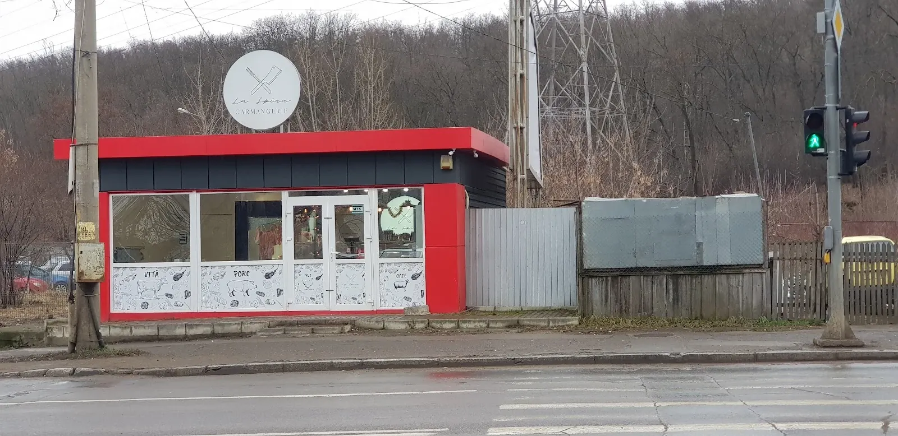
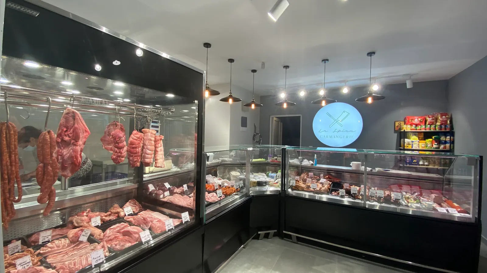

{{Carmangerie · Iași|Butcher’s · Iași|Talho · Iași}}La Spînu{{Carne de porc și de vită, cârnați și afumături. Spuneți-ne de ieri, găsiți totul gata azi.|Pork and beef, sausages and smoked meats. Tell us yesterday, find it ready today.|Carne de porco e de vaca, enchidos e fumados. Diga-nos ontem, encontre tudo pronto hoje.}}
{{Alegeți bucata, câte kilograme și cum o tăiem. Precomanda pleacă scrisă pe WhatsApp sau prin SMS, iar la ridicare e deja cântărită.|Pick the cut, how many kilos and how we cut it. The pre-order goes out written by WhatsApp or SMS, and it’s already weighed when you pick it up.|Escolha a peça, quantos quilos e como a cortamos. A encomenda segue escrita por WhatsApp ou SMS e, quando a vier buscar, já está pesada.}}

{{La vedere, la bucată.|On show, by the piece.|À vista, à peça.}}
{{Cârnați atârnați|Hanging sausages|Enchidos pendurados}}{{În vitrina frigorifică, pe cârlige.|In the chilled case, on hooks.|Na vitrine refrigerada, em ganchos.}}
{{Carne de porc|Pork|Carne de porco}}{{Pe tăvi, la bucată, cu eticheta de preț.|On trays, by the piece, price-tagged.|Em tabuleiros, à peça, com etiqueta de preço.}}
{{Carne de vită|Beef|Carne de vaca}}{{Scrie mare și pe geam: vită, porc.|It says so on the window too: beef, pork.|Também está escrito no vidro: vaca, porco.}}
{{Afumături și preparate|Smoked meats and deli|Fumados e charcutaria}}{{În vitrina lungă de lângă tejghea.|In the long case by the counter.|Na vitrine comprida junto ao balcão.}} {{sortiment de confirmat|range to be confirmed|variedade a confirmar}}
{{Trei pași până la cârlig.|Three steps to the hook.|Três passos até ao gancho.}}
{{Alegeți|Choose|Escolha}}
{{Bucata de porc sau de vită, cârnați, afumături — sau scrieți ce vă trebuie.|A cut of pork or beef, sausages, smoked meats — or type what you need.|Uma peça de porco ou de vaca, enchidos, fumados — ou escreva o que precisa.}}
{{Cântăriți|Weigh it|Pese}}
{{Câte kilograme și cum o vreți: întreagă, feliată, tocată sau porționată.|How many kilos and how you want it: whole, sliced, minced or portioned.|Quantos quilos e como a quer: inteira, fatiada, picada ou em porções.}}
{{Ridicați|Pick up|Levante}}
{{Alegeți ziua și ora. Vă confirmăm, iar punga vă așteaptă la tejghea.|Pick the day and time. We confirm, and the bag waits at the counter.|Escolha o dia e a hora. Confirmamos e o saco espera no balcão.}}
{{Începeți precomanda|Start the pre-order|Começar a encomenda}}

{{Roșu, lângă semafor.|Red, by the lights.|Vermelho, junto ao semáforo.}}
- {{Un chioșc roșu cu negru, la stradă, chiar lângă semafor și trecerea de pietoni.|A red-and-black kiosk on the street, right by the traffic lights and the crossing.|Um quiosque vermelho e preto à beira da estrada, mesmo junto ao semáforo e à passadeira.}}
- {{Deasupra: sigla rotundă cu două satâre încrucișate.|Above it: the round logo with two crossed cleavers.|Por cima: o logótipo redondo com dois cutelos cruzados.}}
- {{Adresa exactă|Exact street address|Morada exata}}: {{de confirmat|to be confirmed|a confirmar}} · Plus Code 4HPP+5W
{{Mâine e grătar?|Barbecue tomorrow?|Churrasco amanhã?}}
{{Comandați azi, iar carnea e porționată și gata la ora la care treceți.|Order today, and the meat is portioned and ready by the time you drop by.|Encomende hoje e a carne fica cortada e pronta à hora a que passar.}}
{{Din vitrină, pe cântar.|From the case, onto the scale.|Da vitrine, para a balança.}}
{{Patru rafturi, ca în magazin. Ce e azi în vitrină și cât costă vă spunem la telefon — sau puneți totul direct în precomandă.|Four shelves, like in the shop. What’s in the case today and what it costs, we tell you on the phone — or put it all straight into a pre-order.|Quatro prateleiras, como na loja. O que há hoje na vitrine e quanto custa dizemos ao telefone — ou ponha tudo direto na encomenda.}}
{{Sortimentul și prețurile|Range and prices|Variedade e preços}} {{de confirmat|to be confirmed|a confirmar}}
{{Bucățile de mai sus sunt cele obișnuite într-o carmangerie; ce e azi pe tavă aflați la telefon.|The cuts above are the usual ones at a butcher’s; what’s on the tray today, ask on the phone.|As peças acima são as habituais num talho; o que está hoje no tabuleiro, pergunte ao telefone.}}
{{Agățați-o în cârlig.|Hang it on the hook.|Pendure-a no gancho.}}
{{Fiecare produs adăugat atârnă pe bara din dreapta, cu eticheta lui. Când lista e gata, o trimiteți scrisă și vă confirmăm.|Every product you add hangs on the rail, with its own tag. When the list is ready, send it in writing and we confirm.|Cada produto que junta fica pendurado na barra, com a sua etiqueta. Quando a lista estiver pronta, envie-a por escrito e confirmamos.}}
{{Mic pe dinafară, plin înăuntru.|Small outside, full inside.|Pequeno por fora, cheio por dentro.}}
{{Un chioșc roșu la stradă. Înăuntru: lumină caldă, o vitrină frigorifică cu cârnați atârnați, tăvi cu carne la bucată și un raft de băcănie.|A red kiosk on the street. Inside: warm light, a chilled case with hanging sausages, trays of fresh cuts and a grocery shelf.|Um quiosque vermelho à beira da estrada. Lá dentro: luz quente, uma vitrine refrigerada com enchidos pendurados, tabuleiros de carne à peça e uma prateleira de mercearia.}}
{{Fotografii|Photos|Fotografias}}

{{Înainte să veniți.|Before you come.|Antes de vir.}}
{{Se vinde la kilogram|Sold by the kilo|Vende-se ao quilo}}{{Cântărim pe loc; precomanda e orientativă, prețul îl dă cântarul.|We weigh on the spot; the pre-order is a guide, the scale sets the price.|Pesamos na hora; a encomenda é indicativa, o preço é o da balança.}}
{{Tăiem cum vreți|Cut to order|Cortamos como quiser}}{{Feliat, tocat, porționat pentru grătar.|Sliced, minced, portioned for the grill.|Fatiado, picado, em porções para grelhar.}} {{de confirmat|to be confirmed|a confirmar}}
{{Plata cu cardul|Card payments|Pagamento com cartão}}{{de confirmat|to be confirmed|a confirmar}}
{{Comenzi mari|Big orders|Encomendas grandes}}{{Pentru o petrecere sau un grătar mare, sunați cu o zi înainte.|For a party or a big barbecue, call a day ahead.|Para uma festa ou um churrasco grande, ligue com um dia de antecedência.}}
0755 046 460
{{Sunați pentru ce e azi în vitrină sau trimiteți precomanda scrisă.|Call to hear what’s in the case today, or send your pre-order in writing.|Ligue para saber o que há hoje na vitrine ou envie a encomenda por escrito.}}